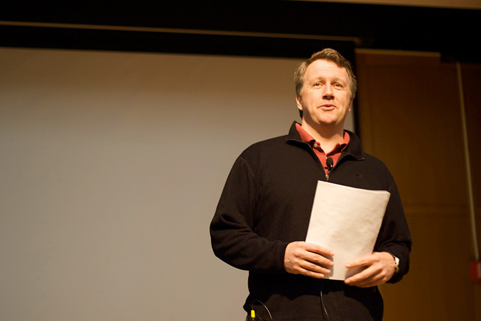

— 02/02/2016 —
About 9 months ago I discovered Paul Graham's essays.

This was a live changing moment for me!
He has ignited the passion for startups in me. Since then I have been following Y-Combinator, the startup accelerator he co-founded, closely. It became my dream to join the Y-Combinator family one day.
I am aware of the fact that there are several top accelerator programs out there which are doing a great job as well. I just like the philosophy of Y-Combinator.
If you want to build a great company, you need a great product.
If you want to have a great product, you have to iterate a lot.
If you want to iterate a lot, you need quick iteration cycles.
If you want to have quick iteration cycles, you need to be able to develop really fast.
Speed wins!
"Speed wins" is the main theme for my next two years.
Become a really good Full Stack Developer
Finish my studies in Electrical Engineering
Move to Silicon Valley and work for a tech giant for one year to build a network
Start a company
Get into YC
Right now, I am in Chiang Mai (Thailand) to work on my goals without distraction.
I basically work on three things: - My blog
My literature teacher won't believe it, but I actually do enjoy writing now ;-) On top, I want to improve my communication and language skills.
My programming skills
I go through tutorials and develop side projects.
My product skills I have a side project called "HabitControl". I use it to improve my product skills. I basically interview random people here and ask for feedback. After some tests, I will experiment with some launching strategies on hackernews. Just to get a basic understanding what works and what doensn't.
I will update this post from time to time.
— 05/20/2016 —
I am back in Germany now.
As always, I would love to hear your feedback!
Shoot me an email: hello@janruettinger.co